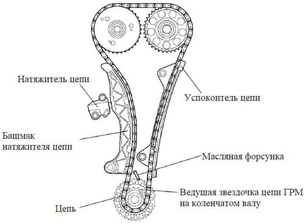
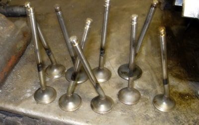

Замена ремня и цепи ГРМ в рассрочку на СТО "КапеллаПлюс" в Минске
Немного о периодичности замены ремня и цепи ГРМ и возможных последствиях их обрыва.
ГРМ - газораспределительный механизм. Ремень / цепь ГРМ – это деталь двигателя, которая обеспечивает синхронизацию распределительного и коленчатого валов. Другими словами, он служит для своевременной подачи топлива в цилиндры и выпуска отработавших газов из них. Без него невозможна нормальная работа двигателя и движение автомобиля в принципе. Ремень / цепь ГРМ также приводит в действие водяную помпу (водяной насос), который, в свою очередь, обеспечивает циркуляцию охлаждающей жидкости в системе охлаждения. В современных автомобилях ремень привода ГРМ находится в передней части двигателя между блоком цилиндров и радиатором. Как правило, чтобы добраться до него потребуется снять пару пластиковых защит.
В отличие от ремня, цепь с шестернями, натяжителем и успокоителем расположена внутри двигателя. С одной стороны, это хорошо: шум от работы цепи меньше слышен и сам механизм лучше смазывается моторным маслом, что значительно увеличивает ресурс его работы. С другой стороны, чтобы оценить техническое состояние цепи необходимо снимать клапанную крышку. Неполадки цепи ГРМ можно определить по характерному рокочущему звуку, доносящемуся из-под клапанной крышки двигателя.
Вот некоторые симптомы неполадок с цепью ГРМ:
- смещение фаз газораспределения из-за перескакивания цепи на 1—2 зуба в результате прослабления. Двигатель при этом плохо заводится и сильно вибрирует. Ощущается потеря мощности. При резком нажатии на педаль газа слышны выстрелы;
- при смещении цепи на 3 зуба, двигатель уже не заведётся. Но подобные ситуации встречаются редко, так как слишком ослабленная цепь проскакивает намного больше. Как результат — это удар поршнем по открывшемуся клапану.
 Размер ущерба в результате разрыва цепи зависит от типа двигателя и момента, когда произошел разрыв. Если в этот момент все клапаны были закрыты, то поршни, не достанут до них. Если цепь перескочила или оборвалась во время движения авто, то Вы сразу почувствуете потерю мощности и произойдет полный отказ двигателя. Если при этом Вы услышали металлический стук, то это означает, что поршни встретились с клапанами. В таком случае надо готовиться к дорогостоящему и серьёзному ремонту двигателя.
У каждого автомобиля есть установленные производителем сроки замены ремня или цепи ГРМ и сроки эти необходимо соблюдать, чтобы не довести двигатель до дорогого по цене ремонта, так как при обрыве ремня или цепи самое меньшее, что может произойти - это загиб клапанов. В этом случае понадобится демонтаж ГБЦ. При обрыве ремня на холостых оборотах, скорее всего потребуется замена 3-4 клапанов, а если обрыв произойдет на включенной передаче, то, скорее всего, заменить придется все клапаны. И это, повторю, наименьшее из зол. Иногда ремонту подлежит весь ГБЦ, так как повреждения получают не только поршни, но и другие элементы блока. Точнее, при обрыве ремня распределительный вал останавливается в одном положении, а коленвал продолжает крутиться. При этом поршни начинают бить по открытым клапанам, и гнут их. Самые серьёзные последствия от разрыва ремня ГРМ возникают у дизельных двигателей. В результате обрыва ремня в дизельных двигателях повреждения получают распределительный вал и его подшипники, толкатели и происходит деформация шатунов и, как результат, ремонт всего блока цилиндров. Поэтому не надо стремиться выжать из ремня ГРМ весь его ресурс до последнего. Не доводите до дорогостоящего ремонта двигатель. После 20-30 тысяч километров пробега авто, начинайте чаще осматривать ремень и при появлении малейших признаков его повреждения или значительного износа, замените ремень на СТО. Лучше лишний раз поменять ремень, чем заплатить огромную цену за ремонт двигателя.
Современные автомобили, точнее их двигатели, имеют большой крутящий момент, поэтому любой обрыв ремня ГРМ в 90% случаев приведет к выходу из строя группы клапанов, а также другим серьезным повреждениям силового агрегата автомобиля. Поэтому не нужно обладать какими-то особенными познаниями в области автомобильных двигателей, чтобы понять, что своевременная замена ремня ГРМ по цене обойдется гораздо дешевле, чем стоимость капитального ремонта всего двигателя автомобиля. Поэтому регулярно проводите осмотр ремня и, как только вы обнаружите его провисание или какие-то повреждения, без лишних отлагательств отправляйтесь на СТО для замены ремня. Также необходимо следить за периодичностью замены ремней или цепи ГРМ, роликов, помпы и натяжителя, установленной заводом-изготовителем.
Лучше доверить замену ремня или цепи ГРМ квалифицированным специалистам СТО, которым можно доверять, так как это процедура требует определенных знаний и опыта. Неправильно установленный ремень даст о себе знать на больших оборотах и под нагрузкой - на подъеме или больших скоростях - при этом ощущается потеря мощности двигателя. Так же неправильно установленный ремень может проявляться в плохом зажигании, так как ремень синхронизирует работу поршней и клапанов. Поэтому, при самостоятельной установке ремня ГРМ, строго соблюдайте точное совмещение меток ремня и шкивов. И если ремень еще Вы можете все-таки как-то самостоятельно заменить, то замену цепи лучше доверить знающим опытным специалистам СТО.
При выборе ремня ГРМ не стоит экономить на его цене. От качества изготовления ремня напрямую зависит продолжительность его службы. Внимательно смотрите характеристики ремня при его покупке. Важные параметры, определяющие принадлежность ремня к модели Вашего автомобиля это количество зубьев ремня, его диаметр, ширина.
Стоимость работ и условия оплаты замены ремня или цепи ГРМ на СТО КапеллаПлюс в Минске
Мы осуществляем замену цепи и ремня ГРМ, а так же ремонт двигателя и группы клапанов в результате обрыва ремня или цепи легковых автомобилей, минивэнов и микроавтобусов с возможностью оплаты в рассрочку по картам рассрочки.
Цена на замену ремня ГРМ у нас на СТО начинается от 80 руб. и может достигать 150-200 руб. в зависимости от модели и двигателя Вашего автомобиля.
Цена на замену цепи, роликов, успокоителя и натяжителя цепи и вовсе может достигать 350-400 руб.
Но столь высокая цена работ по замене ремня или цепи, при наличии у Вас карты рассрочки "Карта покупок" или "МАГНИТ", у нас на СТО в Минске превратиться для Вас во вполне доступную по стоимости, так как, в отличие от других СТО города Минска, мы предоставим Вам беспроцентную ЧЕСТНУЮ рассрочку на 6 месяцев.
Узнать точную цену работ по замене ремня, замене, либо подтяжке, цепи ГРМ именно Вашей модели автомобиля у нас на СТО в Минске Вы можете, отправив свой запрос по форме внизу.
Вы можете самостоятельно приобрести комплект ремня или цепи ГРМ для замены, либо заказать его у нас на свой выбор или по рекомендации специалиста нашей СТО по цене значительно ниже рыночной. Обратите внимание! Приобретая комплект ремня или цепи ГРМ через наше СТО и оплачивая стоимость работ по его замене любой из указанных карт рассрочки, Вы оплачиваете стоимость работ по замене ремня, а так же сам комплект ГРМ в РАССРОЧКУ! И это действительно ВЫГОДНО!
На ВСЕ РАБОТЫ, выполняемые у нас на СТО в Минске, для держателей карт рассрочки "Карта покупок" или "МАГНИТ" действует РАССРОЧКА на 6 месяцев. Цены на услуги при оплате в рассрочку не меняются. Мы предоставляем ЧЕСТНУЮ рассрочку на оплату стоимости наших услуг без скрытых комиссий и двойных цен. Если у Вас нет карты рассрочки, то оформить их можно через интернет в кратчайшие сроки без особых проблем. Ссылки на страницы банков для оформления карт рассрочки Вы найдете на главной странице нашего сайта здесь.
ОФИЦИАЛЬНАЯ ГАРАНТИЯ на ремонт и замену ремня или цепи ГРМ составляет 2000 км или 30 дней. Но даже по истечении этого срока мы не бросаем своих клиентов и, если гарантийный случай наступил не в результате естественного износа, а по вине нашей СТО, то мы исправим и заменим вышедшие из строя части за свой счет. ВНИМАНИЕ!!! Мы даем гарантию только на услуги по ремонту автомобиля. Гарантия на запчасти устанавливается продавцом или изготовителем запчастей отдельно. В любом случае, мы всегда найдем компромисс в решении возникшей проблемы.
Если наступила пора заменить ремень, цепь или весь комплект ГРМ вместе с помпой, роликами и натяжителями цепи в Вашем автомобиле, то Вы можете узнать цену на работы по замене ГРМ или другой услуги по ремонту авто на нашей СТО, а так же оставить заявку или задать иной вопрос нашему мастеру на  +375 (29) 607-49-07 или оставьте свой номер телефона в поле внизу, и, как только мастер освободится, он перезвонит Вам, ответит на все Ваши вопросы, озвучит цену и запишет на диагностику или замену цепи или ремня ГРМ в удобное для Вас время.
+375 (29) 607-49-07 или оставьте свой номер телефона в поле внизу, и, как только мастер освободится, он перезвонит Вам, ответит на все Ваши вопросы, озвучит цену и запишет на диагностику или замену цепи или ремня ГРМ в удобное для Вас время.
Вы можете оплатить ремонт ГРМ в рассрочку. Условия оплаты услуг нашей СТО в рассрочку указаны в шапке нашего сайта. При оплате стоимости работ в рассрочку цена ремонта остается неизменной. Мы предоставляем ЧЕСТНУЮ рассрочку без изменения цен.
 РАССРОЧКА
РАССРОЧКА